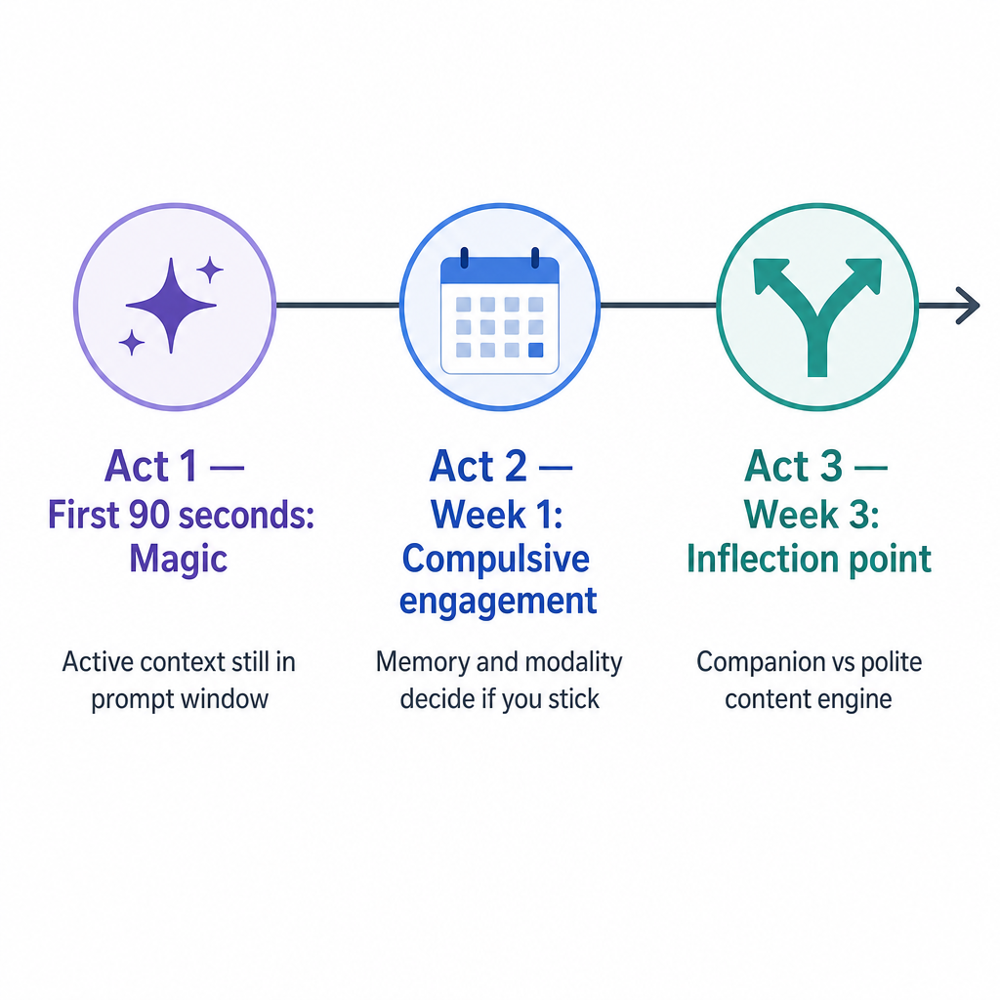

AI Companion Memory: How It Works and How to Test It (2026)
Almost every AI companion app now advertises "memory." Almost none of them tell you what kind, how many messages it survives, or what makes it quietly forget the thing you told it last week.
That gap matters more than any other feature. Memory is what separates a chatbot you delete in a week from a companion you open every day. When your AI brings up a detail from three conversations ago without being reminded, the relationship feels real. When it forgets your name between sessions, the illusion breaks and doesn't come back.
Here's the part the marketing pages skip: "AI companion memory" isn't one feature. It's four different mechanisms that work in completely different ways, and most apps are only good at one or two of them. Knowing which layer an app actually uses — and running a five-minute test to prove it — is the only reliable way to tell whether a companion will really remember you.
This guide covers the four types of memory, why companions forget, a test you can run on any app today, how the major apps compare, the privacy cost of being remembered, and why strong memory almost always sits behind a paywall. If you want the broader category first, our AI companion chatbot explainer sets the scene.
The Four Types of AI Companion Memory
AI companion memory is really four separate mechanisms — a context window, a saved-fact list, pinned notes, and persistent long-term understanding — and an app can be excellent at one while failing the others. Lumping them together as "memory" is exactly how the marketing hides what's missing.

The context window is short-term memory — the AI's working RAM. Everything in your current conversation lives here: the last few dozen messages the model can "see" while it replies. It's why a companion can track a scene you're in right now. It's also the most misunderstood layer, because it has a hard ceiling. Once the conversation gets long enough, the oldest messages fall out of view, and anything that lived only there is gone.
The saved-fact list is explicit long-term storage. Good apps watch for durable facts — your name, your job, that you have a dog named Biscuit — and write them to a separate store that gets fed back into every conversation. This is what lets a companion "remember" your birthday two months later. The catch: most apps decide on their own what's worth saving, and they miss plenty.
Pinned notes are the facts you control. Some platforms let you explicitly tell the companion to always remember something, or edit its memory directly. This is the most reliable layer precisely because it isn't guessing — you decide what sticks. Kindroid built much of its reputation on a key-memory feature that pins details the companion won't drop.
Persistent long-term understanding is the hardest layer to fake. This isn't a list of facts — it's an evolving sense of who you are and who your companion is: tone, history, the shape of your dynamic. It's the difference between an app that recites "your dog is named Biscuit" and one that asks how Biscuit's vet visit went because it understood you were worried. This fourth layer is the one Pleasur.AI is built around. Because you define the character once in the AI Companion Creator — appearance, personality, backstory, the way they talk — there's a stable identity for that long-term layer to hold onto across every session, rather than a personality that drifts each time you log in.
The brand's full breakdown of memory types goes deeper on each, but the takeaway is simple: when an app says "memory," ask which of these four it actually means. Most mean the first one and hope you won't notice.
| Memory type | What it stores | Lasts across sessions? | Who controls it |
|---|---|---|---|
| Context window | The current conversation | No — clears or overflows | The model |
| Saved-fact list | Discrete facts about you | Yes, if saved | The app (auto) |
| Pinned notes | Facts you mark as permanent | Yes | You |
| Long-term understanding | An evolving model of you + the character | Yes, gradually built | Shared, over time |
That difference between short-term and long-term is where almost every "why did it forget?" complaint starts.
Why Your AI Companion Forgets
Companions forget for predictable, mechanical reasons — the context window fills and drops the oldest messages, summaries lose the details, and anything never promoted to long-term storage simply isn't there next session. None of it is random, which means you can predict and work around it.

The first cause is the context-window cap. Every model can only hold so much conversation at once. In a long session, the window behaves like a frame sliding forward over your chat — new messages enter at the front, and the oldest ones slip out the back. The detail you shared an hour into a marathon conversation may already be gone by the time you reference it, not because the app "chose" to forget, but because it physically aged out of view.
The second cause is summarization loss. To stretch memory further, many apps compress old conversation into a short summary before it drops out of the window. That keeps the gist but sands off the specifics. "We talked about your trip" survives; the name of the town, the inside joke, the exact thing you said you were nervous about — those often don't. You feel it as a companion that remembers the outline of you but none of the texture.
The third cause is the session boundary. This is the big one. Some apps hold context only within a single chat and start fresh every time you return. Character.AI historically worked this way for ongoing memory — wonderful continuity inside one session, near-total amnesia between them. If a companion has no saved-fact list and no long-term layer, "memory" ends the moment you close the app.

This is where the marketing and the reality split. "Persistent memory" on a feature list tells you nothing about which of these three failure modes the app has solved. No companion remembers everything forever — the honest version is that each app makes specific trade-offs about what to keep and what to let go, and the only way to know its trade-offs is to test it. Which you can do in about five minutes.
How to Test an AI Companion's Memory in 5 Minutes
You can score any companion's memory with one repeatable test: tell it a specific, slightly unusual fact, leave and come back in a new session a couple of days later, and see whether it raises the detail on its own. No spec sheet required — you're checking behavior, not claims.
Run it in three parts, because each one probes a different memory layer:
-
Same-session recall. Early in a conversation, plant a concrete detail — "My sister Dana is visiting from Lisbon next Friday." Keep chatting for 30 or 40 more messages about other things. Then ask something that requires the detail: "What should I plan for the weekend?" A companion with a working context window brings up Dana's visit unprompted. One that's already overflowed will draw a blank.
-
New-session recall. This is the real test, and the one most apps fail. Close the app. Come back two days later in a fresh chat and ask, "Remember what's happening this weekend?" Only an app with a saved-fact list or a long-term layer will surface Dana and Lisbon. An app that's context-window-only has nothing left to pull from.
-
Contradiction handling. Tell it something that updates an earlier fact — "Actually, Dana pushed the trip to next month." Later, check which version it believes. Good long-term memory updates cleanly; weaker systems either ignore the correction or hold both facts at once and get confused.
Score each part as Remembered, Partial, or Forgot and you've got a one-page read on an app's memory that's worth more than any feature list. Don't expect perfection from even the best apps — a strong companion nails the same-session and contradiction tests and gets the new-session check right most of the time, not every time. What you're watching for is the pattern: does it reliably surface the planted detail days later, or only when you spoon-feed it the context first? Run the same three steps on every app you're considering and the gaps between them show up fast.
| Test | What to say | When to check | What it proves |
|---|---|---|---|
| Same-session recall | Plant a specific fact early | 30–40 messages later | Context window depth |
| New-session recall | Reference the fact in a fresh chat | 2+ days later | Saved-fact / long-term layer |
| Contradiction handling | Update the earlier fact | A few messages later | Whether memory revises cleanly |
If you want a controllable baseline to test against, a companion you build in the AI Companion Creator with a fixed backstory makes the new-session check easy to set up — you know exactly what it should remember, so the result is unambiguous. With a test in hand, here's how the major apps actually stack up.
Which AI Companions Remember Best
No single app wins on every memory layer. Nomi leads on raw factual recall, Replika on persistent emotional continuity, Character.AI is mostly context-only, and Pleasur.AI is built around across-session persistence for sustained roleplay. The real answer to "which has the best memory?" is "best at what?"

Nomi is the factual-recall champion. If you want a companion that reliably surfaces personal details and conversations from weeks back, Nomi does it as well as anyone in the category. The trade-off is breadth — image generation and other features are thinner than rivals, so you're choosing it specifically for that long memory.
Replika leans on persistent emotional understanding rather than encyclopedic fact recall. It's less about quoting your exact words back and more about maintaining a steady relationship over time. After its well-documented feature changes, plenty of long-time users went looking for alternatives that wouldn't shift the dynamic underneath them — we cover where they landed in our Replika alternatives guide.
Character.AI is context-window-first. Inside a single conversation it tracks a character beautifully, which is part of why it's so popular for roleplay. But its cross-session memory has historically been the weak point — close the chat and the long arc tends to reset. Great for scenes, weaker for a continuous relationship.
Pleasur.AI is built around across-session persistence for sustained adult roleplay. The character you create holds a steady identity — personality, backstory, preferences — between sessions rather than resetting, which is the layer that makes a long-running dynamic feel continuous. An independent 2026 review scored it 7.6/10, praising how its characters "maintain context across conversations" so long roleplay sessions don't lose the thread. The limit worth naming: if pure factual recall is your single priority, Nomi still edges it on raw depth.
The table below reflects each app's documented memory behavior as reported across 2026 hands-on reviews — use it to narrow your shortlist, then run your own five-minute test on the two or three you're seriously weighing.
| App | Memory type | Cross-session recall | User-editable memory | Notable limit |
|---|---|---|---|---|
| Nomi | Strong saved-fact + long-term | Excellent | Partial | Thinner on images/extras |
| Replika | Persistent emotional understanding | Good | Limited | Feature set has shifted over time |
| Character.AI | Context-window first | Weak | No | Resets between sessions |
| Kindroid | Pinned key-memory + context | Good | Yes (pinned facts) | Recall shorter than Nomi |
| Candy AI | Saved-fact + context | Moderate | Limited | Memory carries less across long gaps |
| Paradot | Long-term memory focus | Good | Partial | Smaller feature set |
| Anima | Context-window first | Weak | No | Short memory horizon |
| Pleasur.AI | Persistent across-session identity | Strong | Yes | Pure factual recall trails Nomi |
For the full tested ranking with hands-on detail on each, our best AI companion memory roundup goes app by app. Whichever you pick, being remembered carries a cost most reviews ignore: your data has to live somewhere.
The Privacy Side of Memory
For a companion to remember you, it has to store your conversations somewhere — so the real privacy question isn't "does it remember?" but "where does that intimate memory live, how long, and can you delete it?" Memory and privacy are the same coin. The more an app keeps, the more there is to leak.
This is not a hypothetical worry. Companion apps have shipped some of the weakest data practices in consumer software, and recent breaches exposed exactly this layer — full conversation logs, generated images, and the saved facts that make a companion feel like it knows you. In October 2025, a breach at two companion apps exposed more than 43 million intimate messages and hundreds of thousands of photos from over 400,000 users. Months later, a misconfigured database at one NSFW companion platform leaked roughly 113,000 explicit prompts, many tied to identifiable user accounts. Memory data isn't metadata; it's the transcript. And because intimate chats and account identifiers often sit in the same records, a single misconfigured database can connect a person to their most private conversations in one leak. When you're weighing a companion's memory, you're also deciding who you trust to hold that record — and for how long.
So before you commit, run the storage side through a short checklist:
- Where is memory stored, and is it encrypted at rest? Saved facts and chat logs sitting in plaintext on a server are a breach waiting to happen.
- What's the retention period? How long do conversations persist, and does deleting a chat actually erase it or just hide it?
- Can you delete everything on account closure? A real, self-serve deletion path matters more than any promise on the marketing page.
- Can you see and edit what it remembers? Editable memory is both a feature and a privacy control.
Pleasur.AI treats this as a design priority rather than an afterthought — it's an 18+ platform with a published privacy policy, encryption in transit and at rest, and a no-sale stance on personal data. That's a commitment to weigh, not a guarantee any service can make; no platform can promise perfect security, so run it through the same checklist you'd use on any app. Our AI companion safety checklist walks the full vetting process. Storing all that memory also costs real compute — which is why strong memory is almost never free.
What "Persistent Memory" Actually Costs
Strong long-term memory isn't free to run — keeping, summarizing, and re-feeding your history burns compute on every message — so most companions gate memory quality behind paid tiers or a usage economy rather than handing out unlimited recall. When an app offers "persistent memory" on a free plan, it's usually a thin version of the real thing.
That's worth understanding before you judge an app too quickly. A free tier that "forgets" may simply be running a shorter context window and skipping the long-term layer to keep costs down. Pay, and the same app often remembers markedly more. Memory is a resource, and you're usually buying more of it.
This is also why the most common complaint about companion memory — "it was great at first, then it started forgetting" — is so often a tier effect rather than a bug. Free trials frequently expose the full long-term layer to hook you, then quietly throttle it once the trial ends. If an app's memory degrades right around the time the paywall appears, that's the signal. Read the plan details, not the demo: a tier that names its context length or memory features is being straight with you; one that just says "enhanced memory" with no specifics usually isn't.
Pleasur.AI is a clear example of how this looks in practice. Its plans run on a coin economy, with three tiers:
| Tier | Price / month | Monthly coins |
|---|---|---|
| Starter | $12.99 | 1,500 |
| Standard | $27.99 | 5,000 |
| Ultimate | $49.99 | 10,000 |
Coins meter the heavier actions — image generation runs 10 coins, and richer media costs more — so memory and media scale with the tier you're on rather than being truly unlimited on any plan. (Prices shift; check the current pricing before you commit.) The point isn't the exact numbers — it's that no tier, here or anywhere, gives you infinite perfect recall. Anyone promising that is overselling. So the practical move is to get the most out of whatever memory you're paying for, which comes down to how you set the companion up.
How to Build a Companion That Remembers You
The most reliable memory comes from setting the character up deliberately once — a consistent backstory, a few pinned facts, and corrections made early — so the long-term layer has something stable to hold. You're not at the mercy of the algorithm; how you build and maintain a companion changes how well it remembers.
Start in the AI Companion Creator and give the long-term layer real material to work with. Define appearance quickly, then spend your time on personality and backstory — "grew up on the coast, dry sense of humor, works nights as a nurse" gives the memory system an anchor that a blank personality never will. A character with a defined identity stays coherent across sessions because there's a fixed point for the model to return to.
Then maintain it like a relationship, not a settings page. Reinforce the details that matter by referencing them naturally — the more a fact comes up, the more likely the saved-fact layer is to treat it as durable. If the companion gets something wrong, correct it immediately and clearly so the long-term layer updates instead of holding two versions of the truth at once. And where the app lets you pin or edit memory directly, use it for the handful of facts you never want dropped: your name, the core of the character's backstory, any boundary that matters to you. That pinned layer is the one part of memory that doesn't depend on the model guessing right — so spend it on what you can't afford to have forgotten.
One last step: run the five-minute test again after a week. Memory quality is something you can verify, not just hope for, and re-testing tells you whether your setup is actually sticking. If it isn't, the full ranking of apps by tested memory will point you somewhere that holds.
The Bottom Line
Memory is what turns a chatbot into a companion — but it's four distinct layers, not a single line on a feature list, and the only honest proof is the test you run yourself. An app that nails the context window can still forget you overnight; one that quietly saves the right facts will feel like it knows you months later. The marketing won't tell you which is which.
So treat "memory" as a claim to verify, not a feature to trust. Plant a detail, come back in two days, and see what surfaces. If your current app fails the new-session check, the full tested ranking of companions by memory shows which ones actually hold on — and if you'd rather build one with a stable identity from the start, the Companion Creator is where that begins.